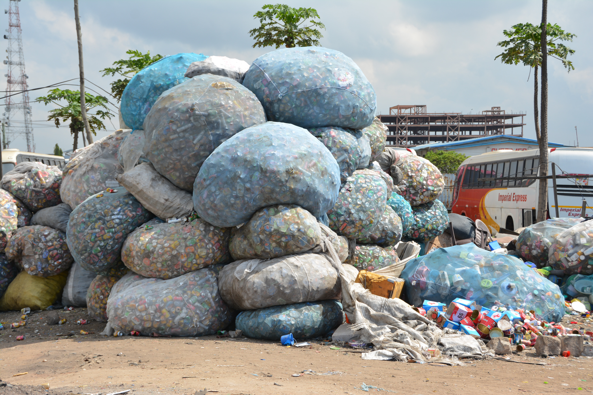
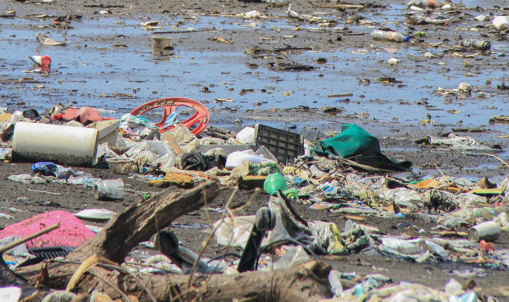

Earth Condition
Mother Nature Today





*Berdasarkan data Sistem Informasi Pengelolaan Sampah Nasional (SIPSN) Kementerian Lingkungan Hidup dan Kehutanan (KLHK)
Volume Timbulan Sampah Di Indonesia
2021
31,13
Jt Ton
2022
19,45
Jt Ton
Angka tersebut menunjukan penurunan sebanyak 37,52%
Kantong plastik adalah jenis sampah yang sulit terurai oleh proses alam (non biodegradable) dan merupakan salah satu pencemar xenobiotik (pencemar yang tidak dikenal oleh sistem biologis di lingkungan mengakibatkan senyawa pencemar terakumulasi di alam).
Betapa bahayanya sampah yang sulit terurai ini jika terus menerus bertambah dan membanjiri negara kita tercinta ini, pentingnya peran kita sebagai anak muda untuk saling bahu membahu untuk menghentikan pencemaran ini.
*Berdasarkan Data dari Making Oceans Plastic Free (2017)
Jumlah Kantong Plastik Digunakan Di Indonesia
182
Milliar
Bobot Totalnya Mencapai 1.278.900 Ton Per Tahunnya 37,52%
Menurut catatan World Population Review, Indonesia berada di peringkat kelima sebagai negara penyumbang sampah plastik ke laut.
56
Ribu Ton
sampah plastik di laut Indonesia pada Tahun 2021